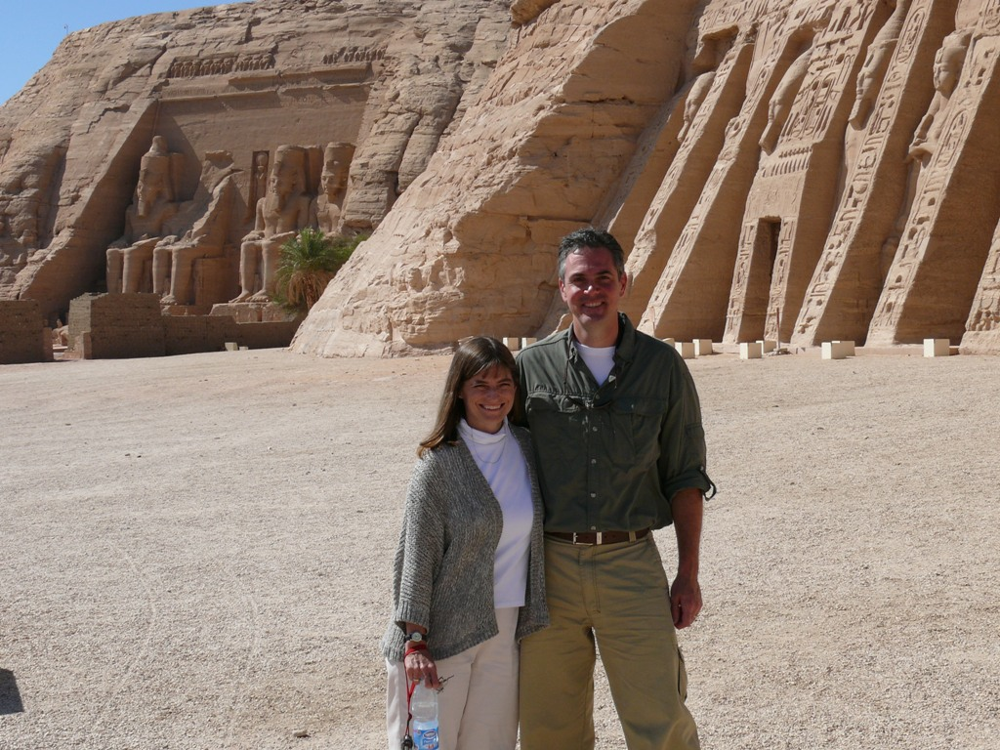

Also hard to choose are the photos and anecdotes. Hopefully, these accurately convey the vibe, while doing justice to each locale...
Kauai - The Na Pali Coast
Hiking the Na Pali Coast in Kauai was quite the experience! I have never been so afraid that someone I loved might actually die. My husband, Mark, decided to drink only water on the hike, and ended up getting severely dehydrated. (He was literally frothing at his calves!) There is no place to stop along the way, so the choice was either to carry on or go back. I am very thankful to say that we both made it out alive! Lesson learned - drink lots of electrolytes!!!
The trail has portions that are less than one foot wide!The rainbow at the end of the trail!
I think this experience is so high on my list because of the trials we went through, and the thrill of surviving them! (I'm pretty sure that this experience is not one of Mark's favorites, though. Understandably!)
We were very fortunate to be able to white water raft the Grand Canyon. What an amazing place!!!
Look out rapids, here we come...Our cushy private bedroom 🙃
I bet you can only imagine the bathrooms - a bucket with a toilet seat called the Groover, for the ridges the buckets used to leave behind. I'll leave that one to your imagination. (You can thank me later...)
Mark and I went to Egypt during the Arab Spring uprising. So, tourism was down, and that meant we had some amazing photo opportunities!!!
The juxtaposition of river (water), shoreline (greenery), and mountains (desert) was absolutely beautiful!

With tourism at an all-time low, some amazing photo opportunities presented themselves...
Egypt seemed so far away and so culturally different, but the local people we met while we were there were not so different from us. That fact tends to prove true wherever we go, and it is one of the main reasons I am so passionate about traveling!
Finally, my favorite trip so far is our African Safari. Kenya just felt like another world, with breathtaking views and amazing wildlife!!!
The Great MigrationUp close and personal view of a cheetah.
The trip made me aware of the conservation efforts going on in the area. The Sheldrick Wildlife Trust is, in my opinion, an organization worthy of ongoing financial support. Please follow the link below to learn more, and please consider making a contribution:
The highlight of the entire trip was visiting the Sheldrick elephant orphanage in Nairobi National Park. Elephants are truly amazing creatures, and orphaned baby elephants are heartbreakingly adorable. The orphanage does some amazing work around rescuing and raising these fantastic beasts!
Baby elephant playing in a mud bath.
Talk about a truly memorable and inspiring experience!!!